v0.1.0
Yeni 30 Nisan 2026Halka açık erken erişim
- +Tanıtım sayfası ve dokümantasyon yayında
- +Platforma duyarlı indirme akışı (macOS / Windows / Linux otomatik)
- +Splash screen — açılışta marka kimliği
- +System tray ikonu brand'lendi (favicon)
ClackShot; donanım hızlandırmalı ekran kaydı, dahili annotation editörü ve sıfır bekleme süresi sunar. macOS, Windows ve Linux için açık kaynak.

Bir ekran görüntüsü almak için aşağıdaki seçeneklerden birini kullanın.
Profesyonel ekran kaydı için modern bir araç — minimal, hızlı, açık kaynak.
WebCodecs ile donanım hızlandırmalı encoding. "Durdur"a basar basmaz dosya hazır — transcoding yok, bekleme yok.
Alan, pencere veya tam ekran. Çoklu monitor desteği, klavye kısayolları, tray menüden tek tıkla erişim.
Native MP4 çıktı, H.264 + AAC. 720p'den 4K'ya, 30/60 fps. Kalite preset'leriyle dosya boyutunu kontrol et.
Kalem, ok, dikdörtgen, blur, metin, numaralandırma, kırpma. Yakaladığın anda annotate et, bekleme yok.
Anlatımlı kayıtlar için mikrofon entegrasyonu. Floating face cam ile kendini kayda dahil et — daire veya yuvarlatılmış çerçeve.
Sistem tercihinizi otomatik takip eder. Anında geçiş, OS değişiminde canlı senkron.
Geleneksel kayıt programları kayıt sonrası transcoding yapar — bir dakikalık video için yarım dakika beklersin. ClackShot kayıt sırasında donanım encoder'ını (VideoToolbox / NVENC / Media Foundation) kullanır. "Stop"a basar basmaz MP4 dosya hazır.
Ekran görüntüsünü aldığın anda annotation tool'larıyla zenginleştir. Üçüncü taraf programa gerek yok — her şey tek pencerede.
Anlatımlı kayıtlar, ürün demoları, tutorial'lar — kendi kameranı kayda dahil et. Floating face cam pencere her zaman üstte; ekranı kaplamaz, istediğin köşeye sürükle.
Hızlı paylaşım için 720p; sunum için 1080p; profesyonel iş için 4K. Bitrate otomatik ölçeklenir, dosya boyutu kontrol altında.
Anlamsal versiyonlama (SemVer) ile şeffaf bir geliştirme akışı. Her sürümde ne değişti, ne eklendi.
Tüm sürümler ücretsiz ve açık kaynak. v0.1.0 — erken erişim.
Şu anda bir Apple Geliştirici Sertifikasını (yılda 99$) karşılayamıyoruz, bu nedenle uygulama imzasız. macOS, imzasız uygulamaları varsayılan olarak karantinaya alır. Bu komutu terminalde çalıştırarak karantinayı kaldırabilirsiniz.
xattr -rd com.apple.quarantine /Applications/ClackShot.app